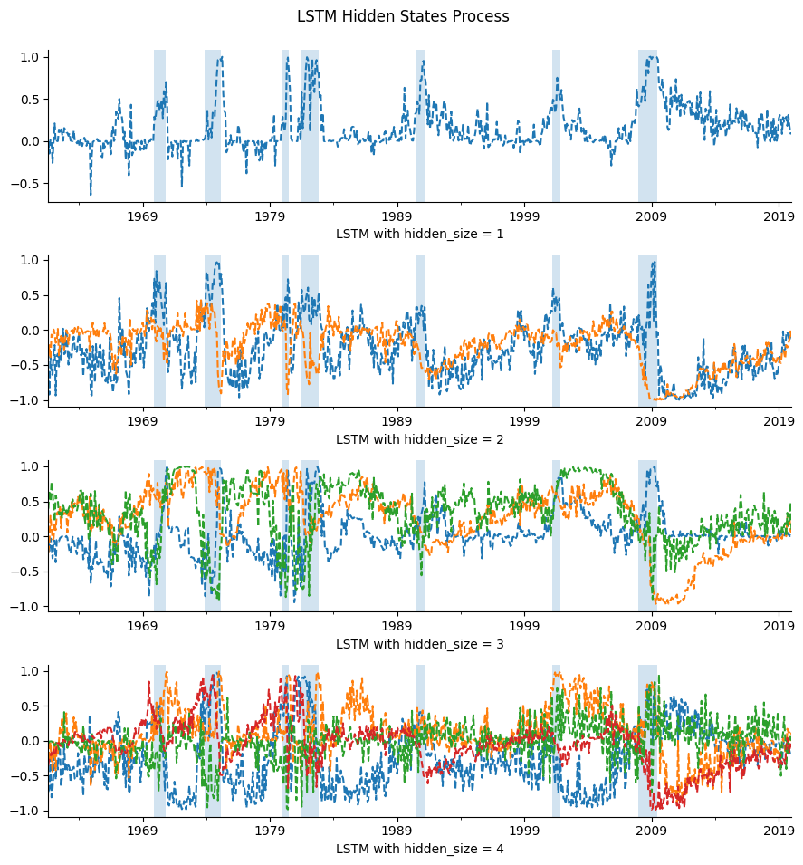
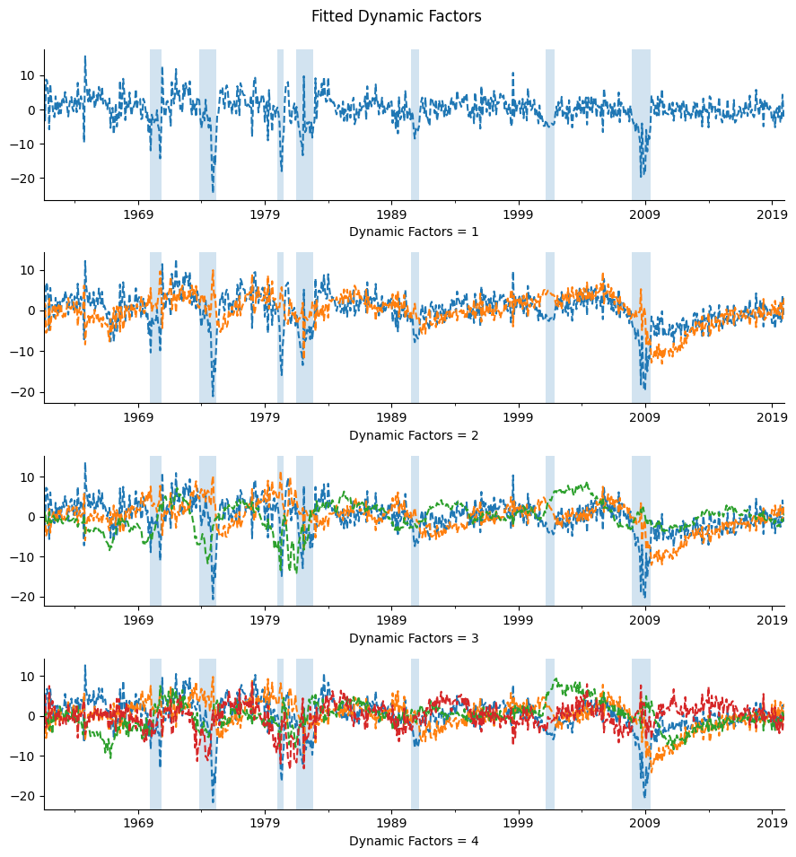

Recurrent Neural Networks#
UNDER CONSTRUCTION
RNN, Elman Network, LSTM
compare Linear Dynamic Factor Models
import numpy as np
import pandas as pd
from pandas import DataFrame, Series
import matplotlib.pyplot as plt
import re
import time
from datetime import datetime
import statsmodels.api as sm
import random
import torch
import torch.nn as nn
import torch.nn.functional as F
import torch.optim as optim
from sklearn.preprocessing import StandardScaler
from tqdm import tqdm
from finds.readers.alfred import fred_md, fred_qd, Alfred
from finds.misc.show import Show
from secret import paths, credentials
# %matplotlib qt
VERBOSE = 0
show = Show(ndigits=4, latex=None)
imgdir = paths['images'] / 'states'
device = torch.device("cuda" if torch.cuda.is_available() else "cpu")
### Load and pre-process time series from FRED
alf = Alfred(api_key=credentials['fred']['api_key'])
vspans = alf.date_spans('USREC') # to indicate recession periods in the plots
beg = 19600301
end = 20200131
# TODO: end = train up to MINUS two quarters, forecast through current
### Retrieve FRED-MD series and apply tcode transformations
df, t = fred_md(202004) # from vintage April 2020?
data = []
for col in df.columns:
data.append(alf.transform(df[col], tcode=t['transform'][col], freq='m'))
mdf = pd.concat(data, axis=1).iloc[2:]
mdata = mdf[(mdf.index >= beg) & (mdf.index <= end)].dropna(axis=1)
mdata = (mdata - mdata.mean(axis=0)) / mdata.std(axis=0, ddof=0)
mdata.index = pd.DatetimeIndex(mdata.index.astype(str), freq='m')
mdata
monthly/2020-04.csv
| RPI | W875RX1 | DPCERA3M086SBEA | CMRMTSPL | RETAIL | INDPRO | IPFPNSS | IPFINAL | IPCONGD | IPDCONGD | ... | DDURRG3M086SBEA | DNDGRG3M086SBEA | DSERRG3M086SBEA | CES0600000008 | CES2000000008 | CES3000000008 | MZMSL | DTCOLNVHFNM | DTCTHFNM | INVEST | |
|---|---|---|---|---|---|---|---|---|---|---|---|---|---|---|---|---|---|---|---|---|---|
| 1960-03-31 | -0.134881 | -0.275771 | 2.216461 | -2.860458 | -0.488916 | -1.494126 | -0.747423 | -0.399146 | -0.045307 | -1.035927 | ... | -1.469820 | 0.295721 | -0.643390 | -0.003771 | 3.306562 | -1.010361 | 0.316937 | 0.142584 | 0.047443 | 0.324377 |
| 1960-04-30 | 0.140605 | 0.203278 | 2.471089 | 0.718774 | 1.808191 | -1.351744 | 0.044685 | -0.109636 | 0.617368 | -0.158355 | ... | 1.329945 | 0.735110 | 0.960469 | -2.253155 | -7.467190 | 0.001676 | -0.193935 | 0.356025 | 0.269794 | 2.267079 |
| 1960-05-31 | -0.045275 | -0.004559 | -4.482796 | -3.197753 | -1.675079 | -0.432646 | 0.516409 | 0.612768 | 0.480566 | 0.339132 | ... | -0.418471 | -1.113542 | 0.316095 | 2.255746 | 4.566901 | 0.001676 | 0.188096 | -0.197676 | -0.101655 | 0.353369 |
| 1960-06-30 | -0.338482 | -0.482476 | -0.559540 | 0.602494 | -0.511228 | -1.983791 | -1.854133 | -1.702628 | -0.970468 | -0.600344 | ... | -0.849520 | 0.036686 | -0.482642 | -1.125930 | -1.252825 | 0.001676 | 0.186521 | 0.210401 | 0.367009 | -0.943151 |
| 1960-07-31 | -0.148985 | -0.100803 | -0.122954 | -0.860250 | -1.254201 | -0.747608 | -1.070579 | -0.984785 | -1.243071 | -1.916083 | ... | 0.918360 | 0.302768 | 0.421378 | 1.123500 | 0.828946 | 0.001676 | 0.247264 | -0.447705 | -0.162111 | 3.023607 |
| ... | ... | ... | ... | ... | ... | ... | ... | ... | ... | ... | ... | ... | ... | ... | ... | ... | ... | ... | ... | ... | ... |
| 2019-09-30 | -0.079715 | -0.081618 | -0.174630 | -0.239203 | -0.752893 | -0.747932 | -1.076215 | -1.247348 | -0.984334 | -1.453438 | ... | -0.071819 | -0.163996 | -0.071125 | -0.204290 | -0.307419 | 0.098370 | 0.138877 | -0.163879 | -0.281842 | 0.375870 |
| 2019-10-31 | -0.598714 | -0.639323 | -0.385917 | -0.656535 | -0.108856 | -0.828301 | -0.648297 | -0.596663 | -0.251664 | -1.417370 | ... | 0.074042 | 1.267315 | 0.290075 | -0.202566 | 0.000637 | 0.000978 | 0.522365 | 0.080482 | 0.200078 | -1.320725 |
| 2019-11-30 | 0.202376 | 0.355149 | -0.057531 | 0.283946 | -0.217945 | 0.983266 | 1.686887 | 2.054174 | 2.128329 | 2.857134 | ... | -0.704147 | -0.295116 | -0.421273 | -0.201345 | -0.037554 | 0.484033 | -0.370009 | -0.095845 | -0.056103 | 0.600435 |
| 2019-12-31 | -0.644414 | -0.535997 | -0.324231 | -0.230203 | -0.374542 | -0.815438 | -1.127034 | -1.336095 | -1.517772 | -1.297690 | ... | -0.239385 | 0.522518 | 1.193464 | 0.604609 | 0.457551 | -0.386623 | -0.767687 | 0.246058 | 0.036262 | -0.996952 |
| 2020-01-31 | 0.203651 | -0.063344 | 0.048876 | 0.250612 | 0.246743 | -0.934552 | -1.599474 | -2.152708 | -1.360395 | 0.204324 | ... | 1.763764 | -0.802817 | -0.654722 | -0.703859 | -0.456666 | -0.672961 | 0.661603 | -0.219878 | -0.078393 | 0.361933 |
719 rows × 123 columns
### Retrieve FRED-QD series and apply tcode transformations
df, t = fred_qd(202004) # from vintage April 2020
data = []
for col in df.columns:
data.append(alf.transform(df[col], tcode=t['transform'][col], freq='q'))
df = pd.concat(data, axis=1).iloc[2:]
qdata = df[(df.index >= beg) & (df.index <= end)].dropna(axis=1)
qdata.index = pd.DatetimeIndex(qdata.index.astype(str), freq='q')
qdata
quarterly/2020-04.csv
| GDPC1 | PCECC96 | PCDG | PCESV | PCND | GPDIC1 | FPI | Y033RC1Q027SBEA | PNFI | PRFI | ... | TLBSNNB | TLBSNNBBDI | TABSNNB | TNWBSNNB | TNWBSNNBBDI | CNCF | S&P 500 | S&P: indust | S&P div yield | S&P PE ratio | |
|---|---|---|---|---|---|---|---|---|---|---|---|---|---|---|---|---|---|---|---|---|---|
| 1960-03-31 | 0.022224 | 0.009521 | 0.031666 | 0.009043 | 0.002506 | 0.095788 | 0.032856 | 0.034200 | 0.034166 | 0.030306 | ... | 0.037652 | 279155.40 | 0.009183 | 0.004308 | 86.68 | -0.051251 | -0.026073 | -0.029896 | 0.2278 | -0.057371 |
| 1960-06-30 | -0.005408 | 0.012535 | 0.022501 | 0.011003 | 0.010896 | -0.097837 | -0.018342 | 0.016711 | 0.014503 | -0.085422 | ... | 0.018321 | 280144.95 | 0.003057 | 0.000375 | -22.94 | 0.014782 | -0.003680 | -0.006778 | 0.0876 | -0.024349 |
| 1960-09-30 | 0.004881 | -0.004005 | -0.008030 | -0.001174 | -0.005880 | -0.002544 | -0.021666 | -0.044133 | -0.017656 | -0.030290 | ... | 0.018804 | 275164.71 | 0.007952 | 0.006017 | -47.83 | 0.036742 | -0.006262 | -0.012285 | 0.0276 | 0.001369 |
| 1960-12-31 | -0.012917 | 0.001294 | -0.025450 | 0.009625 | 0.000690 | -0.117411 | -0.001999 | -0.035770 | -0.002352 | -0.001084 | ... | -0.005096 | 273738.35 | 0.003843 | 0.005440 | 8.20 | 0.000101 | -0.006964 | -0.006569 | 0.0257 | 0.000796 |
| 1961-03-31 | 0.006728 | -0.000372 | -0.056541 | 0.009798 | 0.005951 | 0.025621 | -0.008523 | -0.033095 | -0.014372 | 0.003940 | ... | 0.038024 | 291545.95 | 0.009200 | 0.003994 | 45.35 | -0.025001 | 0.113813 | 0.111342 | -0.3889 | 0.128986 |
| ... | ... | ... | ... | ... | ... | ... | ... | ... | ... | ... | ... | ... | ... | ... | ... | ... | ... | ... | ... | ... | ... |
| 2018-12-31 | 0.002710 | 0.003565 | 0.003155 | 0.003444 | 0.004208 | 0.007390 | 0.006561 | 0.017770 | 0.011718 | -0.011973 | ... | 0.021630 | 398935.93 | 0.013740 | 0.008576 | 12.73 | -0.012680 | -0.057381 | -0.058307 | 0.1617 | -0.098323 |
| 2019-03-31 | 0.007623 | 0.002829 | 0.000639 | 0.002416 | 0.005331 | 0.014937 | 0.007913 | -0.000245 | 0.010812 | -0.002634 | ... | 0.014793 | 399732.21 | 0.016181 | 0.017095 | 2.61 | 0.012799 | 0.011111 | 0.011686 | 0.0233 | -0.033627 |
| 2019-06-30 | 0.004985 | 0.011135 | 0.030572 | 0.006846 | 0.015664 | -0.016345 | -0.003600 | 0.002076 | -0.002531 | -0.007507 | ... | 0.004232 | 392693.84 | 0.011550 | 0.016331 | -3.44 | 0.021996 | 0.057399 | 0.059265 | -0.0731 | 0.013658 |
| 2019-09-30 | 0.005204 | 0.007750 | 0.019467 | 0.005429 | 0.009520 | -0.002477 | -0.002080 | -0.009578 | -0.005777 | 0.011351 | ... | 0.012694 | 388971.84 | 0.013807 | 0.014530 | -4.63 | 0.022218 | 0.025918 | 0.025926 | -0.0106 | 0.004248 |
| 2019-12-31 | 0.005261 | 0.004535 | 0.006805 | 0.005952 | -0.001400 | -0.015571 | -0.001371 | -0.010886 | -0.006189 | 0.015724 | ... | 0.012437 | 389233.63 | 0.005609 | 0.001158 | -6.33 | 0.011764 | 0.042307 | 0.041578 | -0.0445 | 0.035413 |
240 rows × 211 columns
LSTM#
in pytorch for time series
class LSTM(nn.Module):
def __init__(self, n_features, hidden_size, num_layers=1):
super().__init__()
self.lstm = nn.LSTM(input_size=n_features,
hidden_size=hidden_size,
num_layers=num_layers)
self.linear = nn.Linear(in_features=hidden_size,
out_features=n_features)
def forward(self, x, hidden_state=None):
"""
x: shape (seq_len, batch, input_siz)
h: of shape (num_layers * num_directions, batch, hidden_size)
c: of shape (num_layers * num_directions, batch, hidden_size)
output: shape (seq_len, batch, num_directions * hidden_size)
"""
output, (h, c) = self.lstm(x, hidden_state)
return self.linear(output), (h.detach(), c.detach())
### Create input data for LSTM, with sequence length 16 (months)
seq_len = 16
train_exs = [mdata.iloc[i-(seq_len+1):i].values
for i in range(seq_len+1, len(mdata))]
n_features = mdata.shape[1]
### Train LSTM
hidden_factors = dict()
prediction_errors = dict()
for hidden_size in [1, 2, 3, 4]:
model = LSTM(n_features=n_features,
hidden_size=hidden_size).to(device)
print(model)
# Set optimizer and learning rate scheduler, with step_size=30
lr, num_lr, step_size = 0.001, 3, 400
optimizer = torch.optim.Adam(model.parameters(),
lr=lr)
scheduler = torch.optim.lr_scheduler.StepLR(optimizer,
step_size=step_size,
gamma=0.1)
loss_function = nn.MSELoss()
batch_size, num_epochs = 32, step_size*num_lr
for i in tqdm(range(num_epochs)): # Run training loop per epoch
idx = np.arange(len(train_exs)) # shuffle indxs into batches
random.shuffle(idx)
batches = [idx[i:(i+batch_size)] for i in range(0,len(idx),batch_size)]
total_loss = 0.0
model.train()
for batch in batches: # train each batch
# train_ex input has shape (seq_len, batch_size=16, n_features)
nparray = np.array([[train_exs[idx][seq] for idx in batch]
for seq in range(seq_len+1)])
train_ex = torch.tensor(nparray).float()
model.zero_grad()
y_pred, hidden_state = model.forward(train_ex[:-1].to(device))
loss = loss_function(y_pred[-1],
train_ex[-1].to(device))
total_loss += float(loss)
loss.backward()
optimizer.step()
scheduler.step()
# collect predictions and hidden states, and compute mse
with torch.no_grad(): # reduce memory consumption for eval
hidden_state = []
prediction_error = []
mse = nn.MSELoss()
for i in range(seq_len+1, len(mdata)):
# single test example shaped (seq_len=12, batch_size=1, n_features)
test_ex = torch.tensor(mdata[i-(seq_len+1):i].values)\
.float()\
.unsqueeze(dim=1)\
.to(device)
y_pred, (h, c) = model.forward(test_ex[:-1], None)
prediction_error.append(float(mse(y_pred[-1], test_ex[-1])))
hidden_state.append(h[0][0].cpu().numpy())
hidden_factors[hidden_size] = DataFrame(hidden_state,
index=mdata.index\
[(1+seq_len):len(mdata)])
prediction_errors[f"Hidden Size {hidden_size}"] = np.mean(prediction_error)
print(prediction_errors)
LSTM(
(lstm): LSTM(123, 1)
(linear): Linear(in_features=1, out_features=123, bias=True)
)
100%|██████████| 1200/1200 [00:49<00:00, 24.44it/s]
{'Hidden Size 1': 0.8803263414237235}
LSTM(
(lstm): LSTM(123, 2)
(linear): Linear(in_features=2, out_features=123, bias=True)
)
100%|██████████| 1200/1200 [00:48<00:00, 24.60it/s]
{'Hidden Size 1': 0.8803263414237235, 'Hidden Size 2': 0.812816398053767}
LSTM(
(lstm): LSTM(123, 3)
(linear): Linear(in_features=3, out_features=123, bias=True)
)
100%|██████████| 1200/1200 [00:45<00:00, 26.51it/s]
{'Hidden Size 1': 0.8803263414237235, 'Hidden Size 2': 0.812816398053767, 'Hidden Size 3': 0.7557395131796854}
LSTM(
(lstm): LSTM(123, 4)
(linear): Linear(in_features=4, out_features=123, bias=True)
)
100%|██████████| 1200/1200 [00:44<00:00, 26.87it/s]
{'Hidden Size 1': 0.8803263414237235, 'Hidden Size 2': 0.812816398053767, 'Hidden Size 3': 0.7557395131796854, 'Hidden Size 4': 0.7086005449889392}
### Plot LSTM hidden states sequence
fig, axes = plt.subplots(len(hidden_factors), 1, figsize=(9,10),
num=1, clear=True)
for hidden_factor, ax in zip(hidden_factors.values(), axes):
hidden_factor.plot(ax=ax, style='--', legend=False)
for a,b in vspans:
if a >= min(hidden_factor.index):
ax.axvspan(a, min(b, max(hidden_factor.index)), alpha=0.2)
ax.spines["top"].set_visible(False)
ax.spines["right"].set_visible(False)
ax.set_xlabel(f"LSTM with hidden_size = {len(hidden_factor.columns)}")
plt.tight_layout(rect=[0, 0.03, 1, 0.95])
plt.suptitle(f"LSTM Hidden States Process", fontsize=12)
plt.savefig(imgdir / 'lstm.jpg')

## Dynamic Factor Models
dynamic_factors = dict()
for i in [1, 2, 3, 4]:
mod = sm.tsa.DynamicFactorMQ(endog=mdata,
factors=1, # num factor blocks
factor_multiplicities=i, # num factors in block
factor_orders=2, # order of factor VAR
idiosyncratic_ar1=False) # False=white noise
fitted = mod.fit_em(disp=20,
maxiter=200,
full_output=True)
dynamic_factors[i] = DataFrame(fitted.factors.filtered.iloc[seq_len+1:])
dynamic_factors[i].columns = list(range(len(dynamic_factors[i].columns)))
mse = nn.MSELoss()
prediction_errors[f"Dynamic Factors {i}"] = float(
mse(torch.tensor(fitted.fittedvalues.iloc[mod.factor_orders+1:].values),
torch.tensor(mdata.iloc[mod.factor_orders+1:].values)))
#print(fitted.summary(0))
EM start iterations, llf=-1.1843e+05
EM iteration 20, llf=-1.1774e+05, convergence criterion=3.1004e-05
EM converged at iteration 29, llf=-1.1773e+05, convergence criterion=9.4463e-07 < tolerance=1e-06
EM start iterations, llf=-1.1327e+05
EM iteration 20, llf=-1.1147e+05, convergence criterion=7.3906e-06
EM iteration 40, llf=-1.1146e+05, convergence criterion=2.7273e-06
EM iteration 60, llf=-1.1146e+05, convergence criterion=1.0928e-06
EM converged at iteration 62, llf=-1.1146e+05, convergence criterion=9.9257e-07 < tolerance=1e-06
EM start iterations, llf=-1.0902e+05
EM iteration 20, llf=-1.062e+05, convergence criterion=1.8777e-05
EM iteration 40, llf=-1.0617e+05, convergence criterion=3.7322e-06
EM converged at iteration 56, llf=-1.0617e+05, convergence criterion=9.9476e-07 < tolerance=1e-06
EM start iterations, llf=-1.0478e+05
EM iteration 20, llf=-1.0301e+05, convergence criterion=2.4994e-05
EM iteration 40, llf=-1.0299e+05, convergence criterion=4.3864e-06
EM iteration 60, llf=-1.0298e+05, convergence criterion=2.0342e-06
EM iteration 80, llf=-1.0298e+05, convergence criterion=1.0751e-06
EM converged at iteration 83, llf=-1.0298e+05, convergence criterion=9.7809e-07 < tolerance=1e-06
### Plot dynamic factors
fig, axes = plt.subplots(len(dynamic_factors),1,figsize=(9,10),num=1,clear=True)
for dynamic_factor, ax in zip(dynamic_factors.values(), axes):
dynamic_factor.plot(ax=ax, style='--', legend=False)
for a,b in vspans:
if a >= min(dynamic_factor.index):
ax.axvspan(a, min(b, max(dynamic_factor.index)), alpha=0.2)
ax.spines["top"].set_visible(False)
ax.spines["right"].set_visible(False)
ax.set_xlabel(f"Dynamic Factors = {len(dynamic_factor.columns)}")
plt.tight_layout(rect=[0, 0.03, 1, 0.95])
plt.suptitle(f"Fitted Dynamic Factors ", fontsize=12)
plt.savefig(imgdir / 'dynamic.jpg')

## Correlation of LSTM hidden state process with (linear) dynamic factors
rsq = dict()
for k, hidden_factor in hidden_factors.items():
rsq[k] = [sm.OLS(y, sm.add_constant(dynamic_factors[len(dynamic_factors)]))\
.fit().rsquared for _, y in hidden_factor.iteritems()]
print('Average variance of LSTM hidden states explained by dynamic factors')
DataFrame({k: np.mean(r) for k, r in rsq.items()},
index=['R-square']).rename_axis("# hidden states in LSTM:", axis=1)
---------------------------------------------------------------------------
AttributeError Traceback (most recent call last)
/tmp/ipykernel_279548/1932558065.py in ?()
1 ## Correlation of LSTM hidden state process with (linear) dynamic factors
2 rsq = dict()
3 for k, hidden_factor in hidden_factors.items():
4 rsq[k] = [sm.OLS(y, sm.add_constant(dynamic_factors[len(dynamic_factors)]))\
----> 5 .fit().rsquared for _, y in hidden_factor.iteritems()]
6 print('Average variance of LSTM hidden states explained by dynamic factors')
7 DataFrame({k: np.mean(r) for k, r in rsq.items()},
8 index=['R-square']).rename_axis("# hidden states in LSTM:", axis=1)
~/env3.11/lib/python3.11/site-packages/pandas/core/generic.py in ?(self, name)
5985 and name not in self._accessors
5986 and self._info_axis._can_hold_identifiers_and_holds_name(name)
5987 ):
5988 return self[name]
-> 5989 return object.__getattribute__(self, name)
AttributeError: 'DataFrame' object has no attribute 'iteritems'
## Mixed Frequency Dynamic Factor Model
scaler = StandardScaler()\
.fit(qdata['GDPC1'].values.reshape((-1, 1)))
gdp = DataFrame(scaler.transform(qdata['GDPC1'].values.reshape((-1, 1))),
index = qdata.index, columns=['GDPC1'])
mod = sm.tsa.DynamicFactorMQ(endog=mdata,
endog_quarterly=gdp,
factors=1, # num factor blocks
factor_multiplicities=8, # num factors in block
factor_orders=2, # order of factor VAR
idiosyncratic_ar1=False) # False=white noise
fitted = mod.fit_em(disp=1, maxiter=200, full_output=True)
dynamic_factor = DataFrame(fitted.factors.filtered.iloc[seq_len+1:])
dynamic_factor.columns = list(np.arange(len(dynamic_factor.columns)))
Plot fitted GDP values in 2007-2010
# TODO: fit through current
beg = '2006-12-31'
end = '2010-12-31'
fig, ax = plt.subplots(figsize=(9,5), num=1, clear=True)
y = fitted.fittedvalues['GDPC1']
y = y[(y.index > beg) & (y.index <= end)]
ax.plot_date(y.index,
(scaler.inverse_transform(y.to_numpy().reshape(-1,1))/3).cumsum(),
fmt='-o',
color='C0')
x = gdp.copy()
x.index = pd.DatetimeIndex(x.index.astype(str), freq=None)
x = x[(x.index > beg) & (x.index <= end)]
ax.plot_date(x.index, scaler.inverse_transform(x).cumsum(), fmt='-o',color='C1')
ax.legend(['monthly fitted', 'quarterly actual'], loc='upper left')
ax.set_title('Quarterly GDP and Monthly Estimates from Dynamic Factor Model')
plt.tight_layout()
plt.savefig(imgdir / "mixedfreq.jpg")
# Show "Nowcast" of GDP
# Series({'Last Date of Monthly Data:': mdata.index[-1].strftime('%Y-%m-%d'),
# 'Last Date of Quarterly Data:': qdata.index[-1].strftime('%Y-%m-%d'),
# 'Forecast of Q1 GDP quarterly rate':
# scaler.inverse_transform(fitted.forecast('2020-03')['GDPC1'][[-1]])[0],
# 'Forecast of Q2 GDP quarterly rate':
# scaler.inverse_transform(fitted.forecast('2020-06')['GDPC1'][[-1]])[0]},
# name = 'Forecast').to_frame()